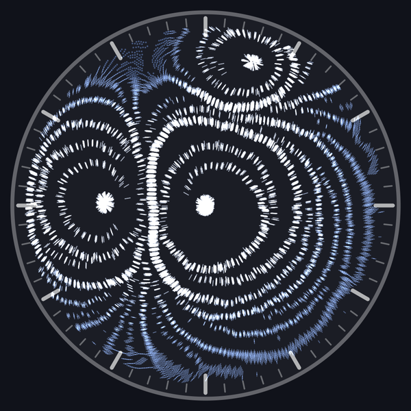
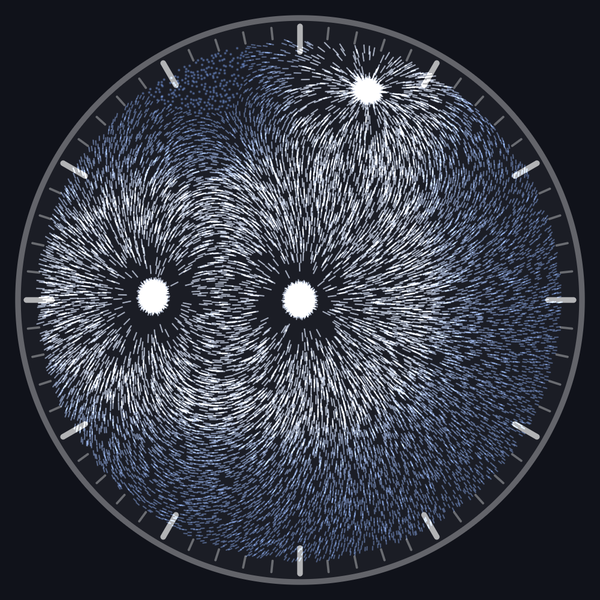
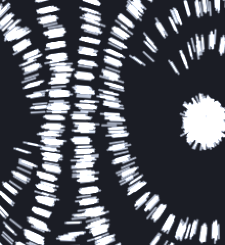
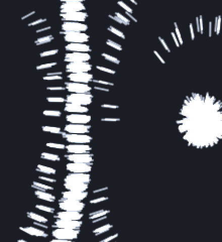

The bands are objects, not waves
The stripes the clock draws are not a rendering trick. Set the dipole pair force to zero and they never form; everything else about the run stays the same.


The magnets comb the particles into short chains, and the chains gather into thin walls that ring every magnet pole. The walls owe their spacing to tearing: material drifts toward a pole faster the closer it gets, so the infalling carpet of chains rips into fragments wherever the stretching beats the chains' grip.
The spacing: tidal stretching
The bands are fragments of infalling material torn by tidal stretching: drift toward a pole speeds up on the way in, so inner material pulls away from outer, and the chains' cohesion sets where the medium tears. The balance scale enters through a fifth root, a direct consequence of the quartic pair-force law, so every parameter affects the spacing with an exponent of one fifth or less: the wavelength looked like a constant of the model because it is close to maximally insensitive. A one-dimensional reduction with the same force laws reproduces both the spacing and its stubbornness, and the prediction that inner gaps stretch wider than outer ones is visible live once magnet strength and mobility are raised. The rings do keep falling, but the drift away from a pole is a fraction of a pixel per second, so they appear parked for minutes; a ring crosses one band spacing in about four minutes, and once its inner edge reaches the steep part of the field the same physics consumes it in seconds.
The wavelength comes from an instability, but its products are bodies, the way a breaking water jet selects a droplet size without the droplets being waves. Understanding the scale also makes it adjustable: scaling all of the fluid's microscopic lengths and speeds together moves the wavelength linearly while preserving the pattern's character, and that transform is exposed in the simulation as a single fluid-scale control.
The walls: zippering
The bands look paradoxical at first: the attraction pulls beads into strings along the field lines, so whatever structure it builds should be stringy too. The way out is that two magnets attract or repel depending on how they sit. Each bead here is a tiny bar magnet pointing along the field. Put two of them nose to tail and they pull together; that is what builds the chains. Lay them side by side instead and their like poles line up, so they push apart; neighboring chains keep their distance. But slide one chain along by half a bead, and each of its beads now sits closest to a neighbor's opposite pole. The repulsion turns into attraction and the two chains click together, staggered like rows of bricks. Real magnetic fluids do the same thing; the literature calls it zippering, and it happens here because the sim computes the actual magnet-to-magnet force instead of faking the look.
One detail decides what the zipper builds. The bond is sideways, so the aggregate grows sideways, bond by bond, while each chain in it only grows lengthwise as far as chaining allows. In lab fluids the chains are long, and zippering a few together makes thick columns along the field. Here the chains stay short, a few beads each (the dashes visible in every ring), so the sideways growth wins: the aggregate becomes a long stack of short chains, elongated across the field. That stack is the band, and measurement confirms it: rendering the particles as bare dots and measuring 448 clumps across three runs gives a median chainlet length of 8.5 pixels against a median band thickness of 9.0, so a band is exactly one chainlet thick, and a chainlet is about two beads. Why the chains stop at two beads is still not explained; the spacing between the bands, which looked equally mysterious for a long time, is resolved above.
The boundary between the two behaviors is an angle, not a distance. Draw a line between two beads: if it runs within about 55 degrees of the field direction, the pair attracts; outside that cone, it repels. The exact value, 54.7 degrees, is known as the magic angle, and it turns the stagger into a distance rule. A staggered neighbor sits half a bead spacing along the field and one gap across, and that diagonal has to stay inside the attraction cone. The cone's edge fixes the ratio: the gap between two chains can be at most about 0.7 bead spacings, or the diagonal tips out of the cone and the chains push apart again. This is what sets how tightly the chains inside one wall pack.
Eight questions, run against the sim
Patterns that assemble and die invite the questions people ask of cellular automata: is there a birth threshold, and what happens when two structures collide? Eight such questions were written down with predictions, then run against the simulation. Headless runs are deterministic, so every result below reproduces from one command. Four of the predictions turned out to be wrong.
| question | predicted | measured |
|---|---|---|
| where does banding happen | melting line vs noise | melting confirmed; onset at any nonzero attraction |
| birth/death threshold | hysteretic | no hysteresis; fully reversible |
| do ordering fronts move | yes, then stall | no front exists; everything condenses at once |
| band collisions | merge or stack | stack first, then merge into one wall; nothing annihilates |
| closed loops | chains closing along field lines | chain loops are impossible; band loops exist instead |
| memory of erased patterns | some | readable 12+ minutes after erasure; decay closer to hours |
| coarsening exponent | power law | none. ring count plateaus, then cliffs |
| template reproduction | open | not run yet (needs a finger, see below) |
The misses share one explanation, and it is the interesting result. Bands behave like discrete objects. The bond view shows why: chain bonds run along each band, tying it into one connected body, and there are no bonds across the gap to the next band. So bands collide the way objects do. They stack, then merge when drift brings them into contact; they never pass through each other, because they are made of conserved particles, not of state. And they die the way objects do: the ring count around a pole sits at three for four minutes, then the pole eats them one after another. A power law needs a crowd of structures trading size. Three rings are not a crowd.


The loops question produced the most instructive miss. Chains cannot close into loops here: the in-plane field lines run pole to pole, so a chain following one always ends on a magnet. The transverse bands close instead. Around an isolated pole a band has nowhere to end, and the bond view confirms an unbroken ring of laterally bonded particles.
The memory result is the most surprising. Form bands for three minutes, switch the pair force off, and the sharp structure dissolves in about two. The density ghost it leaves behind, depleted halos where the bands swept material up, stays measurable for at least twelve minutes and extrapolates to hours. Erasure is Brownian diffusion across the ghost's length scale, which makes the noise parameter the forgetting rate: the dish acts as a slow recording medium that fades with temperature.
It is tempting to read the band spacing off the zipper geometry, but the measurements say no: doubling the bead spacing moved the band period only 16 percent. Two quantitative explanations were then tested and both failed. Spacing did not budge across a sixteenfold change in particle speed limit, which kills a drift-times-formation-time argument, and it stayed flat across an eightfold change in particle density, which kills a mass-balance argument. Varying the interaction cutoff alone did nothing either. Discreteness artifacts were checked as well: the wavelength is independent of render resolution, neighbor-grid cell size, random seed, and noise level. The one numerical sensitivity found is the integration step: at the default step the selected wavelength sits about 30 percent below its converged value of roughly 0.09 dial radii, which it reaches once the step is four times finer. So the pattern is physical and holds its wavelength for minutes, only widening later as bands merge and get consumed. A promising lead, that the spacing grows with noise and shrinks with particle mobility as a drift-diffusion balance would predict, appeared in small samples and then dissolved under better statistics; the run-to-run scatter of the wavelength turns out to be as large as any parameter effect found so far. That stubbornness is the fifth root at work: the mechanism at the top of this page predicts that nothing moves the spacing by much, and through every sweep, nothing did.
Watch it yourself
The experiment configuration, live (bars fixed in place, second hand magnetically dead):
cargo run --release -- --time 09:00:00 --particles 12000 \
--magnets tip --shapes rect:1x0.03 --strengths 0.3,0.15,0 \
--mobility 2e-8 --max-speed 0.05 --noise 0.008 --chain-strength 0.06
Watch the left pole: rings condense in the first half minute, hold for
four, then get eaten. Drag the chain strength slider to zero to run the
erasure experiment; drag the noise slider up to melt the rings. The
quantitative versions, with the analysis scripts and their calibration
caveats, are in the repo under
agent_docs/research-chain-banding.md.
One experiment is still open: template reproduction. Pile a ridge of particles with the touch magnet while the pair force is off, switch it on, and see whether the ridge zippers into a band that recruits a neighbor row from the gas. That would be the closest thing this system has to reproduction. Nobody has run it yet.